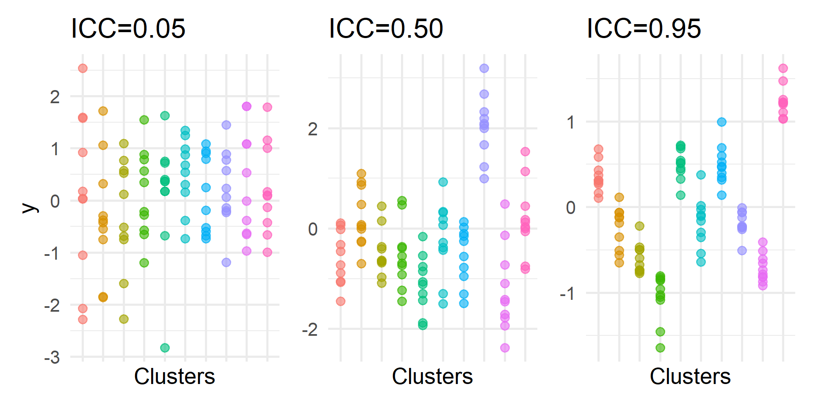

tau00 <- 1.20
sigma <- 4.60Multilevel Modeling
Issues with Clustered Data
Spring 2026 | CLAS | PSYC 894
Jeffrey M. Girard | Lecture 03a

Roadmap
Multilevel Data and Questions
Conceptual Issues with Clustering
Statistical Issues with Clustering
Multilevel Data and Multilevel Questions
What is multilevel data?
- Data are hierarchically clustered when there are groups of observations
that are more similar within groups than they are between groups- We say that observations are nested within clusters
- We count the levels (L#) in ascending order of nesting
- e.g., students (L1) within classrooms (L2)… within schools (L3)…
- e.g., days (L1) within participants (L2)… within countries (L3)…
- In MLM, we assume a successive sampling strategy
- Specifically, we randomly sample from the top-down
- e.g., we sample classrooms and then students within each classroom
- e.g., we sample participants and then days within each participant
What is and isn’t a cluster?
Random Clusters…
- Are randomly sampled
- Come from a population
- Are interchangeable
- Are not exhaustive
- Permit generalization
- Require a large number
- e.g., classrooms
- e.g., individuals
Fixed Groups…
- Are not randomly sampled
- Do not come from a population
- Are not interchangeable
- Are (typically) exhaustive
- Do not permit generalization
- Do not require a large number
- e.g., biological sexes
- e.g., experimental conditions
Types of Multilevel Variables
- Global variables describe their own level
- e.g., the motivation of a student (L1) or the size of a class (L2)
- e.g., the stress level of a day (L1) or the gender of a participant (L2)
- Structural variables “aggregate up” from a lower-level
- e.g., the average motivation of a class (L2), aggregated up from students (L1)
- e.g., the average stress level of a participant (L2), aggregated up from days (L1)
- Disaggregated variables “copy down” from a higher-level
- e.g., the classroom size of a student (L1), copied down from class (L2)
- e.g., the gender of a day (L1), copied down from participant (L2)
- Note: This is often how Global (L2) variables are stored in “long format” data.
Practice: Classify that Variable
Scenario: We are studying employees (L1) nested within companies (L2).
For each variable below, is it Global, Structural, or Disaggregated?
- “Employee Job Satisfaction”
- Answer: Global
- It describes the specific level (L1) at which it was measured.
- “Company Profit” (assigned to every employee row)
- Answer: Disaggregated
- It describes the higher level (L2) but is “copied down” to the lower level (L1).
- “Average Employee Satisfaction” (calculated for each company)
- Answer: Structural
- It describes the higher level (L2) but is “aggregated up” from the lower level (L1).
Multilevel Research Questions
- Within-Cluster Questions
- e.g., how does student motivation (L1) relate to student achievement (L1)?
- e.g., how does daily stress (L1) relate to daily calorie intake (L1)?
- Between-Cluster Questions
- e.g., how does average motivation (L2) relate to average achievement (L2)?
- e.g., how does participant gender (L2) relate to average calorie intake (L2)?
- Cross-level Questions
- e.g., does the relationship between a student’s motivation (L1) and achievement (L1) depend on the class’s average motivation (L2)?
- e.g., does the relationship between daily stress (L1) and daily calorie intake (L1) depend on the participant’s gender (L2)?
Brief Activity
- How might data you care about be clustered?
- What are the clusters, levels, and level numbers?
- What are some multilevel variables you care about?
- What level is each variable on? What type is each?
- What are some multilevel questions you care about?
- Is each within-cluster, between-cluster, or cross-level?
Conceptual Issues
Simpson’s Paradox
Individuals who engage in more rigorous physical activity generally have a lower average resting heart rate. However, in the moment, engaging in more rigorous physical activity temporarily increases heart rate.
Caution
- Relationships may actually reverse at different levels
Visualizing the Paradox

The Ecological Fallacy
Wealthier countries tend to have higher average happiness levels. However, this does not necessarily imply that, within a given country, wealthier individuals tend to be happier. In fact, this effect tends to be much weaker.
Caution
- Higher-level results may not apply to lower levels
The Atomistic Fallacy
Wealthier individuals in the USA tend to vote more conservatively. However, this does not necessarily imply that wealthier regions also tend to vote more conservatively. In fact, the opposite is true with US states and counties tending to vote more liberally.
Caution
- Lower-level results may not apply to higher levels
Lurking Moderators
A new treatment may work (or not work) in a given hospital. However, this does not necessarily imply that it would also work (or not work) in all hospitals. There may be other hospital-level moderators at play (e.g., due to different staff, patients, and environmental factors).
Caution
- A lower-level effect may only be present in certain clusters
Statistical Issues
Forcing a Single Level
- If we disaggregate to the lowest level and run a single-level model…
- We treat 10 students in 20 classrooms as 200 IID students
- Standard errors will be too low and power will be too high
- We will increase our Type I Error rate (false positives)
- We may commit the atomistic fallacy (if actually interested in L2)
- If we aggregate to the highest level and run a single-level model…
- We treat 10 students in 20 classrooms as 20 IID classrooms
- Standard errors will be okay but power will be too low
- We will increase our Type II Error rate (false negatives)
- We may commit the ecological fallacy (if actually interested in L1)
- In neither case can we explore cross-level research questions
The Danger of Ignoring Clustering
Simulation: We simulate 500 datasets where no effect exists (\(\beta=0\)). We analyze the exact same data two ways: ignoring clustering (LM) and accounting for it (MLM). Because H0 is true, only ~5% of slope p-values should be \(<.05\). This is true for MLM but not for LM.

Why is the SE too low?
- If we disaggregate to the lowest level, \(N\) will be too high
- We are pretending that we have 200 IID observations
- But if observations from the same cluster are identical…
- …then we really only have 20 unique observations
- We are taking credit for unique data we don’t have
- This will give us too much confidence (SEs will be too low)
- In reality, observations are rarely identical within clusters
- Clustering is rarely perfect, but it likely has some influence
- Our effective sample size is somewhere between 20 and 200
- Our standard errors should thus be increased by some factor
Why does getting N right matter?
\[ SE_{\beta_p}=\frac{SD_Y}{SD_{X_p}} \sqrt{\frac{1-R^2}{(n-k-1)(1-R_p^2)}} \]
\(n\) is the sample size (assuming IID)
\(k\) is the number of predictor (\(X\)) variables
\(R^2\) is the variance in \(Y\) explained by all \(X\)
\(R_p^2\) is the variance in \(X_p\) explained by all other \(X\)
Warning
If \(n\) is too large, then \(SE_{\beta_p}\) will be too small.
The Intraclass Correlation (ICC)
- How strong is the clustering or interdependency?
- How correlated are observations from the same cluster?
\[ ICC = \rho = \frac{\tau_{00}^2}{\tau_{00}^2+\sigma^2} \]
- \(\sigma^2\) is the Within-Cluster Variance (Residual Variance)
- \(\tau_{00}^2\) is the Between-Cluster Variance (Intercept Variance)
- Note:
easystatsusually reports the SDs (\(\sigma\) and \(\tau_{00}\)), so you must square them to get the variances for this formula.
- Ranges from 0 (no clustering) to 1 (perfect clustering)
Visualizing the ICC
Design Effect
- The design effect (DEFF) is a ratio of the sampling variability observed to that expected from a simple random sample
\[ DEFF=1+\rho(\bar{n}_j - 1) \]
where \(\rho\) is the ICC and \(\bar{n}_j\) is the average cluster size
- The square root of the design effect (DEFT) is what you need to multiply \(SE_{\beta}\) by to roughly correct it for clustering bias1
Effective Sample Size
The design effect (DEFF) can also be used to calculate the effective sample size \((n^*)\) accounting for clustering
\[ n^*=\frac{n}{1+\rho(\bar{n}_j - 1)} \]
Implications
- Higher ICC \((\rho)\) reduces effective sample size (more bias)
- Higher cluster size reduces effective sample size (more bias)
- Important: \(n^*\) applies primarily to Level 1 effects. Power for Level 2 effects depends mainly on the number of clusters (\(J\)), not the total \(N\).
Brief Activity
I recruited 30 participants to each complete 100 trials of a behavioral experiment; thus, my data has 3000 observations. I ran a linear regression and my hypothesized effect was significant! However, my annoying friend told me that I am ignoring “clustering” or something and that my effect might not be significant after all. My other, nice friend explained how to calculate the necessary information, but the software output only gave me Standard Deviations (SDs).
Calculate the ICC, DEFF, DEFT, and \(n^*\) given the following estimates:
- Between-participant SD (
tau00): 1.20 - Within-participant SD (
sigma): 4.60
Answer Key
Interpretation
- The ICC is only 6.4%, which may seem low
- However, the average cluster size is large (100)
- Because both matter, the SEs are about 2.7 times too small
- So, although my overall number of observations is 3000…
- My effective sample size at level 1 is only 411
- And my sample size at level 2 is only 30
- So, it is important to account for clustering here